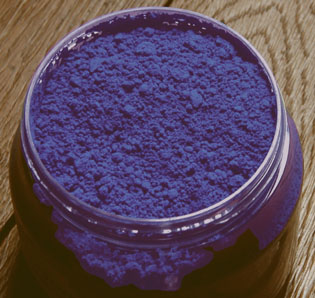

Genèse
Pour des raisons qui sont exposées dans l'article consacré au
lapis-lazuli, l'imitation de cette pierre - appelée outremer bien avant la
synthèse qui porte ce nom - préoccupe l'être humain depuis l'ancienne Égypte
(voir bleu d'Égypte).
A partir du XVIIIème siècle, l'attention de chimistes et même
d'un génie universel, Goethe (1787), se porte sur des poussières bleutées qui
se déposent sur les parois de certains four à chaux ou à verre. Mais c'est
surtout la découverte de la composition chimique du lapis-lazuli (Désormes et
Clément, 1806) qui donne le départ d'une véritable course entre savants.
En
1814, Vauquelin s'aperçoit qu'un échantillon prélevé dans un four de Saint Gobain n'est autre que de l'outremer, du véritable lapis-lazuli !
Dix ans plus tard, la Société d'Encouragement pour
l'Industrie Nationale offre un prix de six mille francs pour le premier
découvreur d'un procédé de synthèse. Cette même société d'encouragement
avait déjà récompensé en 1802 l'invention du procédé Thénard permettant
la fabrication du bleu de cobalt.
Il était clair dans tous les esprits qu'il y avait énormément d'argent à
faire dans ce domaine qui était pratiquement l'enjeu industriel et financier
majeur de l'époque.
En Allemagne, le malheureux Christian Gottlob Gmelin réalise
bien à Tübingen une synthèse contrôlée, mais... un mois trop tard ! Il
produira cependant son pigment industriellement. Moins froid que ce qui
deviendra l'outremer français, l'outremer allemand n'aura pas une vie aussi
longue.
C'est bel et bien Jean-Baptiste Guimet, le talentueux chimiste lyonnais qui
inventa, en 1828, le complexe procédé de synthèse de ce bleu violacé encore
plus froid que le lapis-lazuli, ce qui en fait une véritable nouvelle
couleur, malgré une relative ressemblance avec les bons indigos,
toutefois beaucoup moins couvrants et d'usages moins variés.
Guimet gagne non seulement le concours, mais aussi une réputation
universelle. Son invention
eut des répercutions bien au-delà du domaine des Beaux-arts où elles sont
déjà immenses. Elle autorisa
notamment l'azurage optique des
fibres textiles et des papiers tendant naturellement à jaunir. Selon certaines
sources absolument non confirmées, la production industrielle massive du
pigment destiné à la peinture daterait seulement de 1920 (toute
information fiable à ce sujet sera la bienvenue). Il semblerait en tout cas
qu'entre sa découverte et son entrée encore timide dans les ateliers d'art au cours du XIXème,
l'outremer ait surtout été utilisé à des fins industrielles d'ordre
tinctorial.
Tout cela augmenta considérablement la fortune de la famille Guimet -
l'enjeu industriel étant colossal. D'ailleurs, Émile,
le fils de Jean-Baptiste, eut les moyens de construire un très remarquable
musée - cité par ailleurs sur ce site -, d'abord à Lyon (1879), puis
transféré à Paris (1885), dont les collections asiatiques sont réellement
inestimables.
Composition(s)
Le pigment nouveau était et est encore constitué
d'alumino-silicate de sodium polysulfuré,
tout comme le véritable lapis-lazuli. François
Perego donne des indications intéressantes (p. 447) : le lapis « contient
25 à 40% de lazurite, le reste étant constitué d'augite, de
calcite (...), de diopside, enstatite, de
mica, d'haüyne, d'hornblende, de noséane, de wollastonite
et de pyrite. (...) La lazurite théorique répond à la formule structurale Na8
[S2|(AlSiO4)6]. Toutefois, sa formule dans le
lapis-lazuli est plus ou moins hybride entre les trois, ce qui donne (Na, Ca)8
[(S, SO4, Cl)2|(AlSiO4)6], où la
forme lazurite est prédominante. » De quoi situer chimiquement ces
substances.
La variété artificielle qui fit référence ("bleu outremer français", "french ultramarine",
voir photo ci-dessous) correspond sensiblement au "bleu outremer foncé"
actuel, d'une teinte un peu violacée (voir photo
ci-dessous).
Mais il existe d'autres variétés, du vert au violet. A ce
sujet, lire absolument La famille
chimique des outremers.
En ce qui concerne les bleus, l'outremer clair et le moyen sont
assez chauds et ressemblent au lapis-lazuli ou à certains cobalts. A part l'outremer
violet, les autres variétés que
nous rencontrons sur le marché sont des variantes comportant des
ajouts parfois consternants et d'un intérêt très relatif (Le bleu outremer
teinte verte et même le très surprenant vert
outremer par exemple). Nous enquêtons actuellement sur un mystérieux gris
d'outremer.
Emplois
L'oltramarino synthétique de Guimet était originellement fabriqué à l'aide
d'argile,
de soude, de soufre, de charbon et d'autres substances (voir le
cahier de laboratoire du chimiste sur le site du CNAM-CNUM). Des matériaux
à bas prix. Malgré le coût de la synthèse en four, vers 1830 un kilo de
pigment coûte 882 francs alors que le lapis lazuli vaut de 7 à
11 000 F. Cette accessibilité toute nouvelle d'un bleu vraiment
froid fut perçue partout, très tôt en Occident. La couleur nouvelle a servi et sert
toujours en peinture décorative,
notamment dans le sud de l'Europe (par exemple au sud du Portugal), mais aussi
en Scandinavie, pour la
pigmentation des façades.

De fait, le bleu outremer foncé ou "outremer français",
est vraiment
très conseillé en tant que couleur de base de la palette. Il autorise
la création, en mélange,
- de violets splendides en combinaison avec les rouges les plus clairs
possible, même orangés, comme le rouge de cadmium clair ou le rouge
vermillon.
- de verts déjà assez sophistiqués rien qu'en mélange binaire avec un
jaune de cadmium clair ou moyen, encore davantage s'il est adjoint à une
terre jaune. Il donne alors une déclinaison de verts proches de la terre
verte.
- de terres jaunes, rouges et brunes, adjoint à une base binaire orange
comme "jaune de cadmium clair ou moyen + rouge vermillon".

Il faut signaler
- la présence en lui de soufre. Si le pigment
est de mauvaise qualité et contient du soufre libre, il peut présenter des
incompatibilités avec le plomb.
- sa légère sensibilité aux variations hygrométriques
- le risque de la "maladie de
l'outremer", l'altérant rapidement, lorsque, employé pur,
il est placé dans des conditions hygrométriques défavorables
- il se décompose au contact des acides
(suffisamment violents et concentrés).
Le bleu Majorelle
Une curiosité amusante. C'est un outremer clair dont s'est servi le peintre
du même nom pour peindre sa maison marocaine.
Lecture conseillée :
Le
bleu Majorelle sur Pourpre.com
Toxicité
Nulle selon certains, il faudrait cependant, selon des sources tout à fait
sérieuses (notamment le CSST - voir Art,
sécurité, pollution in Références), éviter de boire et de manger
pendant l'utilisation de ces pigments et au moins éviter le contact cutané. Attention
aussi aux yeux.
Stockage : lieu sec et bien ventilé.
Emplois particuliers
L'outremer serait assez utilisé comme couleur de fond pour la dorure.
Retour
début de page